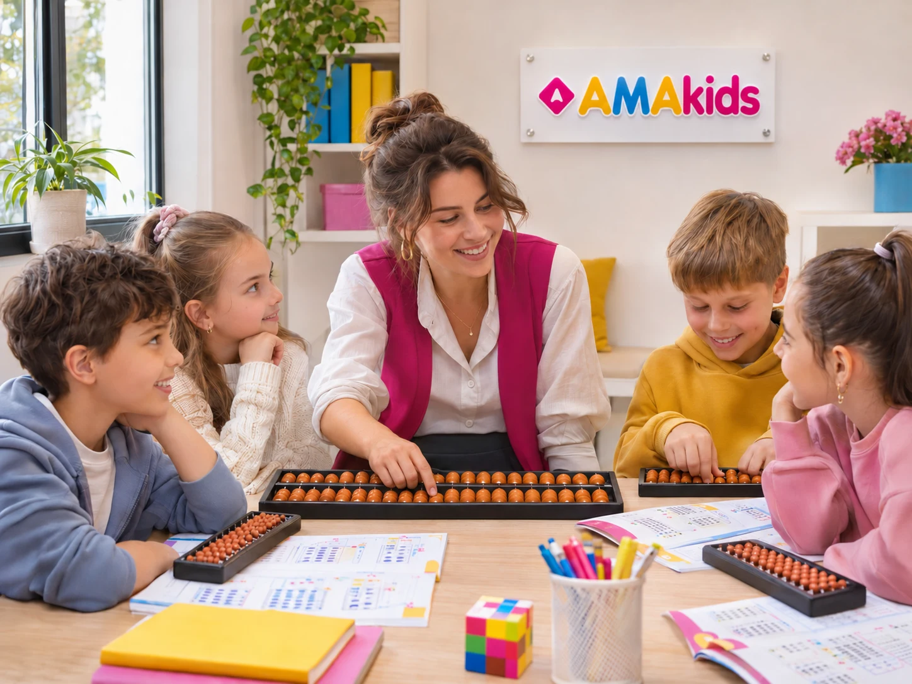
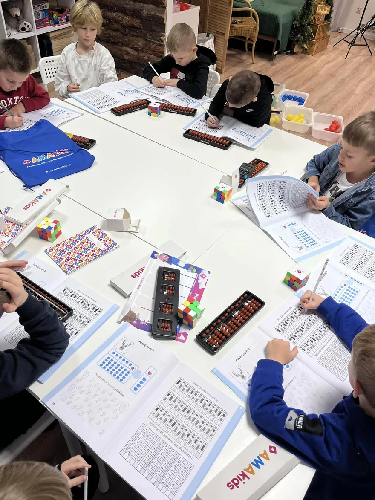
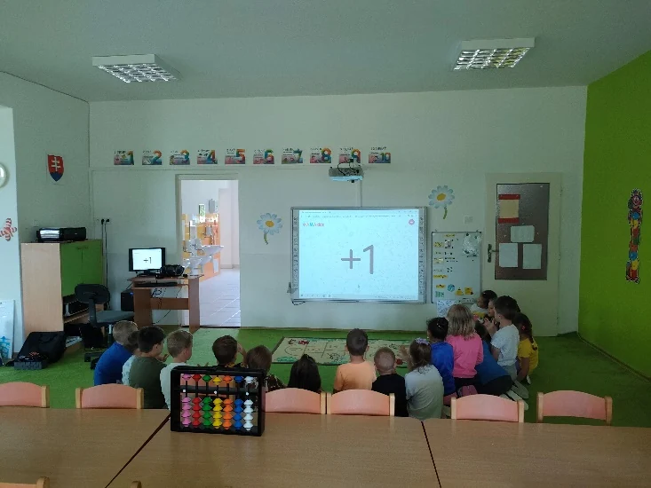

Visual working memory
Hold a bead pattern in mind and update it as each new number appears.
Abacus-based learning for ages 5–16
From abacus beads to mental calculation
Children learn with a teacher, a Japanese abacus and original workbooks. Short digital exercises help them build speed and accuracy between lessons.

On a Japanese soroban, a number has a shape. Children start by moving the beads. Once they can picture those patterns, they can use the same movements in their heads to solve a calculation.
Use a physical abacus to see how bead positions represent numbers.
Try short visualization exercises early, while the physical abacus is still there as a reference.
Update the mental image as numbers change, then work towards longer sequences at a steady pace.
Each exercise gives children something specific to work on as the calculations become more demanding.
Hold a bead pattern in mind and update it as each new number appears.
Stay with a sequence from the first number to the final answer.
Respond faster while checking that answers remain correct.
See place value and recognize how numbers can be combined.
Switch between seeing a number, hearing it and picturing it on the abacus.
Repeat a manageable challenge and see what becomes easier over time.
A typical schedule is one weekly meeting made up of two lesson blocks with a short break. The pace and activities fit each age group.
Recommended group sizes are up to six for ages 5–6 and up to ten for older groups. Check the schedule and group size with your local provider.
Year 1 · Foundation
Start with basic bead movements, build fluency with number combinations and move towards mental calculation, known as Anzan.
Year 2 · Continuation
Apply abacus and mental calculation skills to multiplication and division with increasingly complex numbers.
A lesson starts with the teacher, a soroban and an AMAkids workbook. The platform gives children more ways to practise the same skills between lessons.
See children use their abacuses and printed workbooks, then bring selected pages to life by scanning them with a device.
Tour the student dashboard and see Flashcards, VitaMIX and Treasure Valley in action. Follow a Neurotraining round and a Mental Arithmetic match in Arena.
Educators assign Neurotraining to reinforce the skills covered in class.
Students can earn AmaCoins and try challenges that build on their current level.
Learners who enjoy a challenge can work towards local events and AMAkids Olympiads.


Bring an age-structured enrichment program to an existing setting or build it into a new education business.
Learn how to teach the course and adapt the pace and practice to your group.
Early wins give children something to show, from reading a bead pattern to solving a short sequence in their heads.
With regular practice, early progress can show up within weeks. The timeline varies with the learner and the group.
Beginners learn how the beads represent numbers and practise simple calculations with the physical abacus. The youngest groups use shorter teaching blocks and more hands-on activities. Ask the local provider which entry group fits your child’s age and experience.
Children can approach an exercise through pictures, movement or sound. A child who likes drawing might enjoy spotting bead patterns and holding a changing picture in their mind. A child who likes stories or languages can try listening to numbers and translating what they hear into bead movements. A trial lesson lets your child try these activities and see which ones hold their interest.
Open Training History together in your child’s dashboard to see when they practised. Ask your child to show you a current exercise, then ask their teacher to compare it with an earlier result at a similar difficulty. Look at how many answers were right, how long a sequence they could solve and the pace they could manage. Ask which of those to work on next.
A calculator is useful for getting an answer. An abacus exercise gives children practice holding a number in mind, adjusting it as each new number appears and checking whether the result makes sense. The challenge is in keeping track of the whole sequence.
Mental Arithmetic is an enrichment program. It gives learners a visual way to represent numbers and practise calculation. They continue to use the written methods required in school, where math also covers areas like problem-solving, geometry and reasoning.
The core learning tools are a physical abacus and an AMAkids workbook. A compatible device is used for digital assignments and, where available, augmented reality. At-home practice is usually brief, around 15–20 minutes at a time. Ask your teacher what to practise and how often for your child’s age and level.
AMAkids offers in-person and online formats. A local provider can confirm which classes, teaching languages and age groups are available, and explain how to get the abacus, workbooks and platform access.
The core course moves from addition and subtraction to multiplication and division. Learners who want to go deeper into addition and subtraction can ask about the optional Academica practice. There are also local and international events for learners who enjoy competing.
Schools, centres and other partners can arrange course-specific training for their educators. The training covers the method, the use of workbooks and the platform tools for assigning practice. Ask about training languages, delivery formats and the resources available in your market.
AMAkids can discuss adding the course to an existing school or centre, opening a new AMAkids centre or developing the program in a region. The available model and terms depend on the market and how you plan to deliver the course.
Bring the program to your community with the AMAkids methodology, original workbooks, learning platform and teacher training. Explore options for schools, education centres and new operators.
Explore Partnership Opportunities